Eliza Winstanley was met at Edge Hill Station, Liverpool, in June 1843 by her sister, Alicia, and Isa Johnstone.
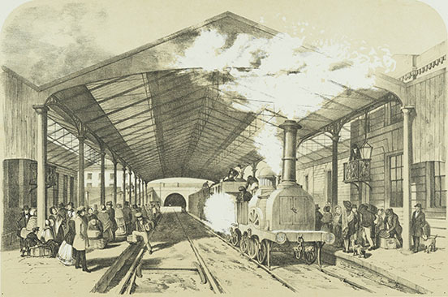
Arthur Fitzwilliam Tait (1819–1905). Edge Hill Station. 1848. Lithograph. Printed and published by Bradshaw and Blacklock, London and Manchester. [full resolution image]
Image 62
The boat on which Eliza Winstanley was traveling in June 1843 from Liverpool delivered two little girls to their father at Douglas, the main harbor on the Isle of Man.
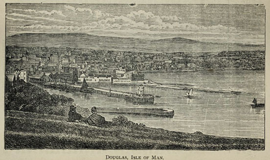
Douglas, Isle of Man (Brown’s Guide to the Isle of Man, 13th ed. [London: Geo. Philip & Son; Liverpool: W.H. Smith & Son, 1897], p. 24) [full resolution image]
Image 63
Eliza Winstanley disembarked at Greenock, intending to catch a train to Glasgow.
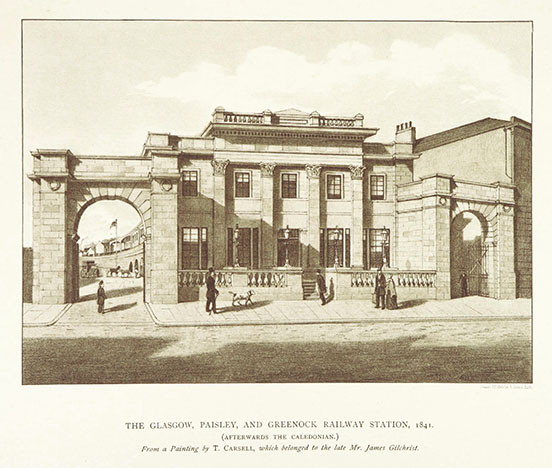
The Glasgow, Paisley, and Greenock Railway Station, 1841. Lithograph from a painting by T. Carsell. (A. Williamson, Views & Reminiscences of Old Greenock [Greenock, Scotland: J. McKeivie & Sons, 1891]. Courtesy of the British Library (digital record no. 10370.i.3) [full resolution image]
Image 64
As the steamer approached Greenock, Eliza Winstanley was struck by the magnificence of Ben Lomond.
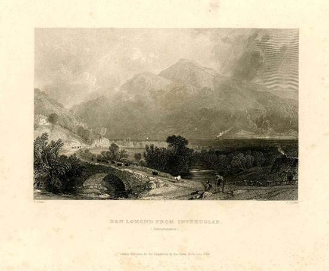
John Cousen (1804–1880). Ben Lomond from Inveruglas (Dunbartonshire). 1839. Etching after Thomas Allom (1804–1872). 21.7 x 28. 3 cm (trimmed). British Museum, London (1936,0425.4)
Image 65
Eliza Winstanley was equally awestruck by the sight of Ben Nevis.
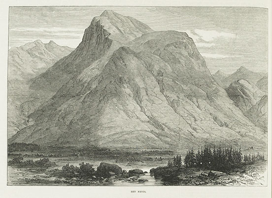
Ben Nevis. 1873. (TheIllustrated London News [Saturday, September 20, 1873], p. 268) [full resolution image]
Image 66
In Glasgow, Eliza Winstanley left the steamer, traveling by train to Edinburgh.
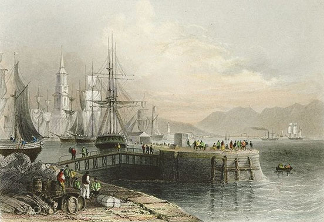
William Henry Bartlett (1809–1854). Port Glasgow [Scotland]. c. 1840. Lithograph engraved by J.W. Appleton. 4 x 7 in. [full resolution image]
Image 67
At the railway station in Edinburgh, Eliza Winstanley transferred to a coach that drove along Princes Street, heading for Portobello.
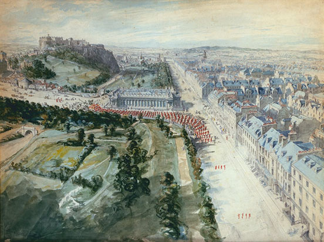
Joseph Woodfall Ebsworth (1824–1908). Princes Street, Edinburgh Looking West, 10.15 am August, 1847, showing Parade, West of the Institution. 1847. [full resolution image]
Image 68
Eliza Winstanley traveled to Portobello, a suburb of Edinburgh, to visit her aunt, Charlotte (Clunie) Biggs, in June 1843.
Eliza Winstanley was met by her husband John and members of his extended family at Kendal.
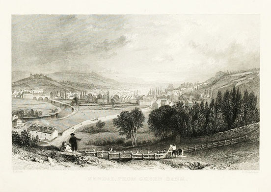
Thomas Allom (1804–1872) and W. Le Petit. Kendal, from the Castle. 1833. Engraving. (Thomas Allom, George Pickering et al., Westmorland, Cumberland, Durham, and Northumberland, Illustrated from Original Drawings by Thomas Allom, George Pickering &c., ed. Thomas Rose, 3 vols. [London: H. Fisher, R. Fisher, & P. Jackson, 1832–1835], vol. 2, facing p. 140) [full resolution image]
Image 70
Eliza and John Winstanley and members of his extended family traveled together to Kirkby Lonsdale.
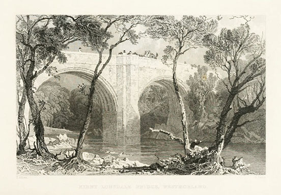
Thomas Allom (1804–1872) and S. Lacey. Kirby Lonsdale Bridge. 1833. Engraving. (Allom, Westmorland, vol. 2, facing p. 82) [full resolution image]
Image 71
Meg Merrilies, whom Catherine Peterkin (Aunt Biggs’s servant) resembled, is the old gypsy woman in Sir Walter Scott’s novel Guy Mannering (1815).
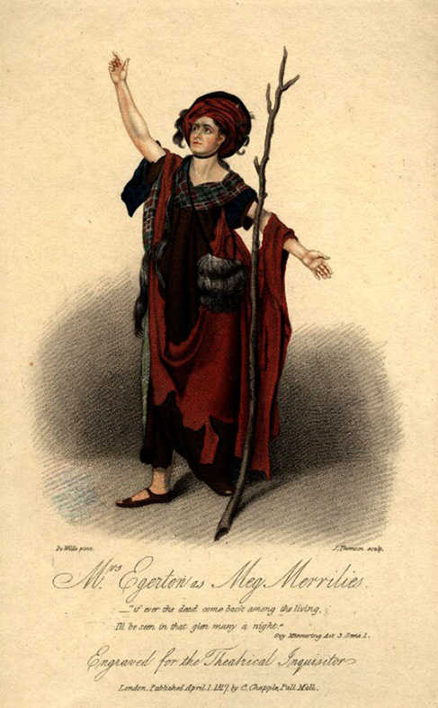
James Thomson (Thompson). Sarah Egerton (née Fisher) as Meg Merrilies in Terry’s “Guy Mannering.” 1817. Hand-colored stipple engraving; published 1 April 1817 by Clement Chapple after Samuel De Wilde (1751–1832). 11½ x 7½ in. (29.1 x 19 cm) paper size. National Portrait Gallery, London (NPG D10966).
Image 72
Robert Scott Moncrieff was Eliza Winstanley’s nephew from her first marriage, to Colonel Robert Wellwood.
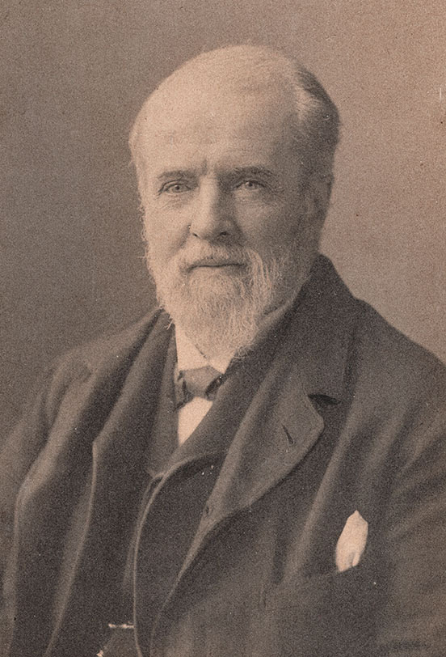
Photograph courtesy of Brenda Beech, Robert Scott Moncrieff’s great-granddaughter; in ink on verso: “Grandpapa R. Scott Moncreiff” [full resolution image]
Image 73
Elizabeth Angel was traveling to London on the Carlisle stage coach; Eliza Winstanley departed the same coach in Kendal.
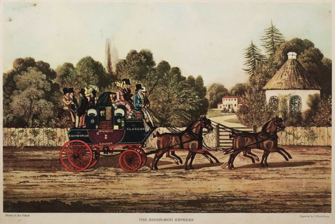
James Pollard (1792–1867) and S. Rosenburg. The Edinburgh Express. c. 1840. Hand-colored aquatint on card. Printed in England.
Image 74
The coach from Edinburgh to Carlisle stopped at Galashiels.
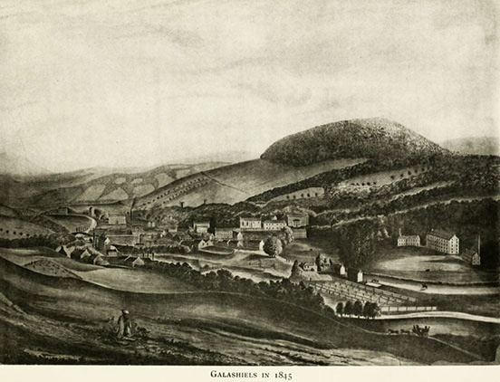
Galashiels in 1845. (Robert Hall, The History of Galashiels [Galashiels, Scotland: Alexander Walker & Son, 1898], frontispiece) [full resolution image]
Image 75
The coach from Edinburgh to Carlisle passed by Netherby Hall.
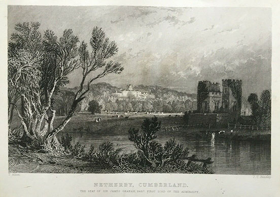
Thomas Allom (1804–1872) and Joseph Clayton Bently (1809–1851). Netherby, Cumberland. Seat of Sir James Graham, Bart. First Lord of the Admiralty. 1835. Etching. [full resolution image]
Image 76
Miss Elizabeth Angel, traveling in the coach from Edinburgh to Carlisle with Eliza Winstanley, was the protegée of the London actor Edward William Elton.
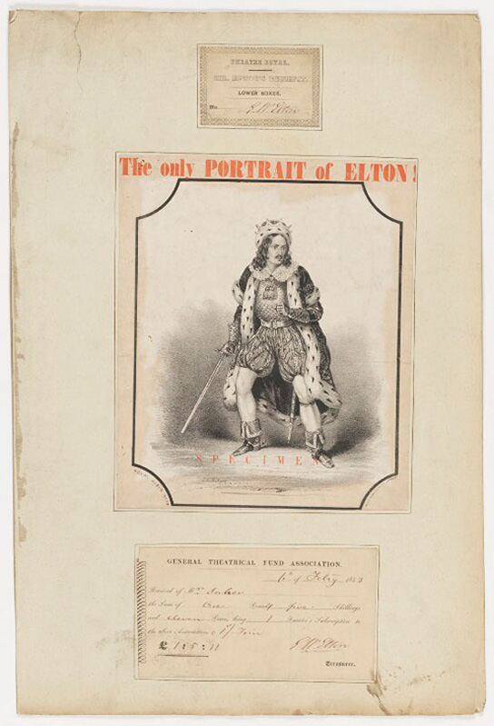
T.C. Wilson. Edward William Elton. c. 1831. Lithograph. National Portrait Gallery, London (D36176).